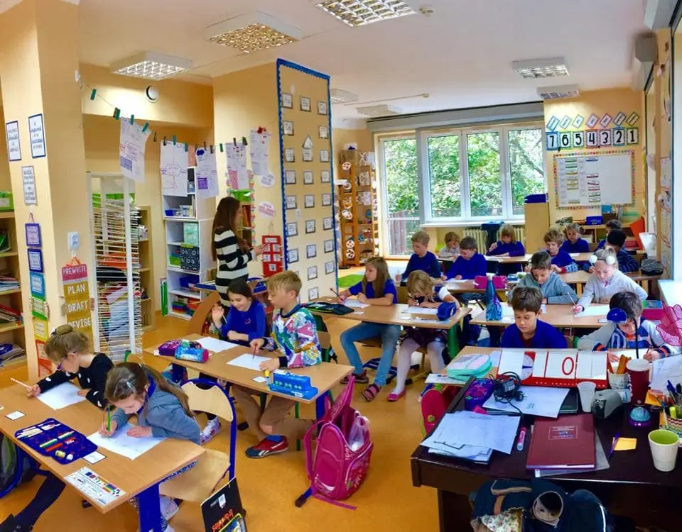

Quienes somos
Somos Untref School, una escuela primaria comprometida con la excelencia educativa y el desarrollo integral de nuestros estudiantes. Nuestra misión es brindar un ambiente de aprendizaje inspirador y enriquecedor, donde cada niño sea valorado como un individuo único y tenga la oportunidad de explorar, descubrir y crecer. Nuestro equipo de educadores apasionados se esfuerza por cultivar la curiosidad, el pensamiento crítico y la creatividad en cada estudiante, preparándolos para enfrentar los desafíos del mundo moderno con confianza y determinación. En Untref School, creemos en la colaboración entre padres, docentes y alumnos para construir una comunidad educativa sólida y unida que promueva valores, respeto y un amor duradero por el aprendizaje.
¿Por qué elegirnos?
Elegir Untref School es elegir una educación excepcional que va más allá de las aulas. Nuestro enfoque pedagógico innovador, respaldado por años de experiencia y un equipo docente altamente calificado, garantiza que cada niño reciba una educación personalizada y relevante. Nuestro compromiso con la excelencia académica se combina con una atención especial a la formación en valores, promoviendo la empatía, la responsabilidad y la inclusión. Además, nuestras propuestas educativas únicas, como el Aprendizaje Basado en Proyectos y la Educación Ambiental Sostenible, preparan a nuestros estudiantes para sobresalir en un mundo en constante cambio. En Untref School, estamos dedicados a forjar un futuro brillante para cada niño que pasa por nuestras puertas, brindándoles las herramientas y la confianza para alcanzar sus sueños y convertirse en ciudadanos comprometidos y exitosos.
Propuesta educativa
Aprendizaje Creativo Basado en Proyectos
Educación Ambiental Sostenible
Tecnología y Alfabetización Digital
Arte y Expresión en Acción
Últimas noticias
Untref School Celebra su Semana de Exploración Científica
Untref School ha dado inicio a su emocionante Semana de Exploración Científica, donde los jóvenes estudiantes se sumergen en un fascinante mundo de descubrimientos y aprendizaje. A lo largo de la semana, los pasillos de la escuela se han convertido en laboratorios vivos, donde los alumnos participan en emocionantes experimentos y actividades interactivas. Desde construir mini volcanes que entran en erupción hasta investigar los secretos de la energía renovable, los estudiantes están experimentando la ciencia en acción de manera práctica y estimulante. Los educadores y el personal de Untref School están comprometidos en inspirar a la próxima generación de científicos y fomentar la pasión por el conocimiento en un entorno educativo enriquecedor.
Programa de Arte Vanguardista se Lanza en Untref School
Untref School está revolucionando la educación artística con el lanzamiento de su novedoso programa, "ArteVanguardia". Los pasillos y aulas de la escuela están llenos de creatividad y expresión mientras los estudiantes exploran una amplia gama de disciplinas artísticas. Desde la pintura y la escultura hasta la música y la danza, los jóvenes artistas están experimentando diferentes formas de expresión y perfeccionando sus talentos individuales. El programa también presenta colaboraciones con artistas locales y visitas a galerías de arte, brindando a los estudiantes la oportunidad de sumergirse en el vibrante mundo artístico de su comunidad. "ArteVanguardia" refleja el compromiso constante de Untref School de brindar una educación integral y enriquecedora que fomente la creatividad y la pasión por las artes en sus estudiantes.